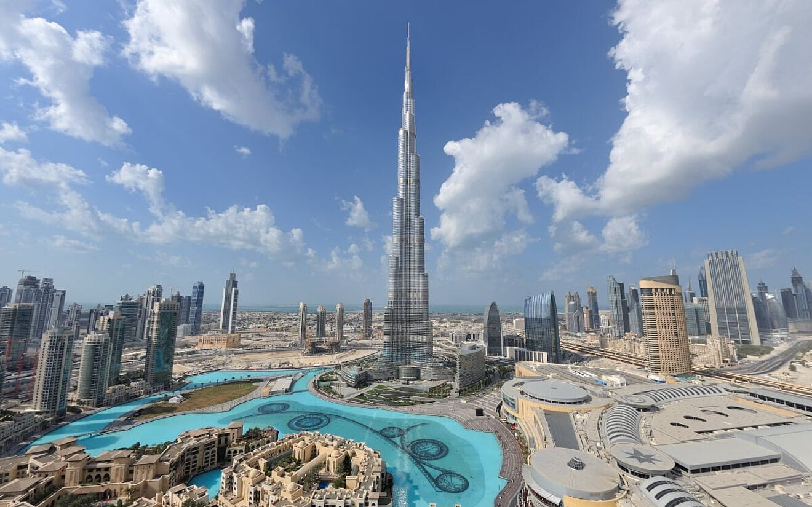
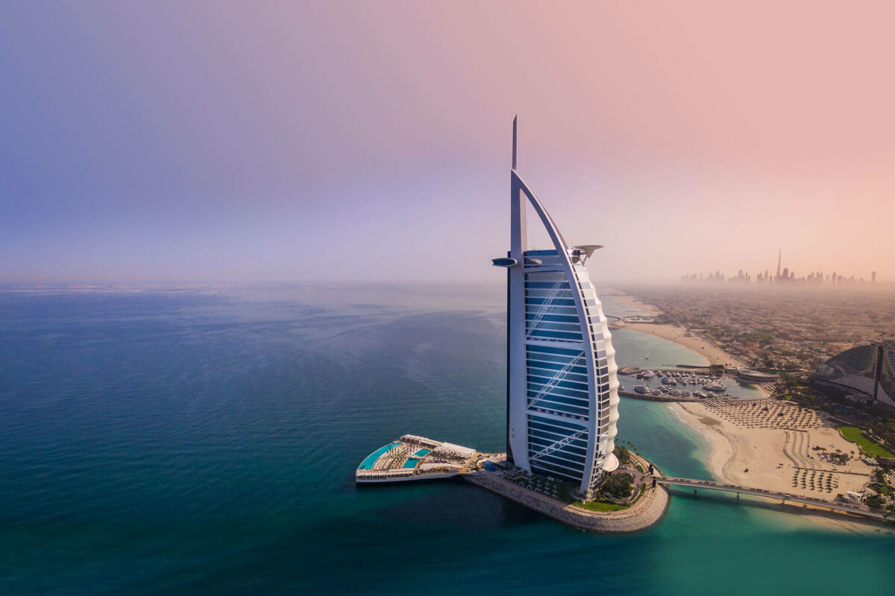
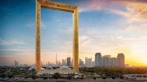

Welcome to the city of gold
Dubai is the most populous city in the United Arab Emirates and the capital of the Emirate of Dubai, the most populated of the country's seven emirates. The city has a population of around 3.79 million (as of 2024), more than 90% of which are expatriates.
Three Main Attractions In Dubai
-
Burj Khalifa
The Burj Khalifa (known as the Burj Dubai prior to its inauguration) is a skyscraper in Dubai, United Arab Emirates. It is the world's tallest structure. With a total height of 829.8 m (2,722 ft, or just over half a mile) and a roof height (excluding antenna, but including a 242.6 m spire) of 828 m (2,717 ft), the Burj Khalifa has been the tallest structure and building in the world since its topping out in 2009, surpassing Taipei 101, the holder of that status since 2004.
-
Burj Al Arab
The Burj Al Arab is a luxury hotel in Dubai, United Arab Emirates. Developed and managed by Jumeirah, it is one of the tallest hotels in the world, although 39% of its total height is made up of non-occupiable space. Burj Al Arab stands on an artificial island that is 280 m (920 ft) from Jumeirah Beach and is connected to the mainland by a private curving bridge. The shape of the structure is designed to resemble the sail of a dhow. It has a helipad near the roof, at a height of 210 m (689 ft) above ground.
-
Dubai Frame
The Dubai Frame is an observatory, museum and monument in Zabeel Park, Dubai. It holds the record for the largest frame in the world. The building has a height of 150.24 meters and a width of 95.53 meters. The building mainly serves as an observatory, providing views of old Dubai in the north and newer parts in the south.